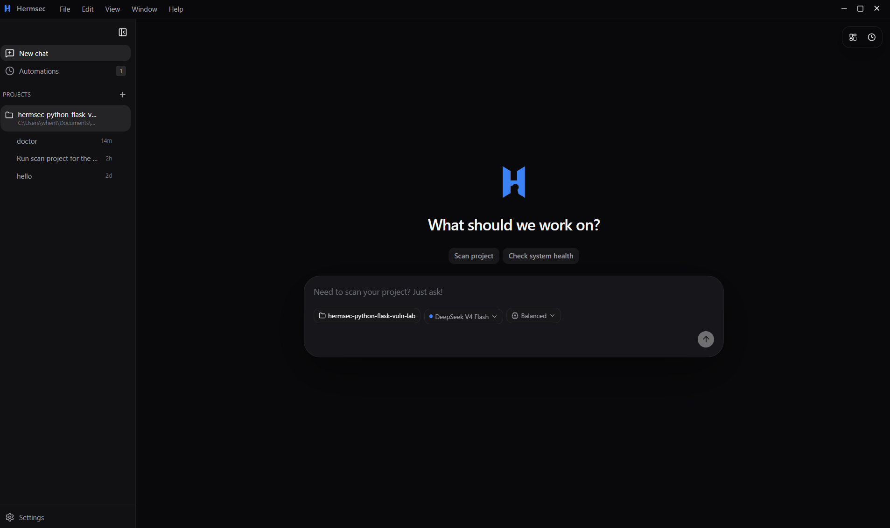
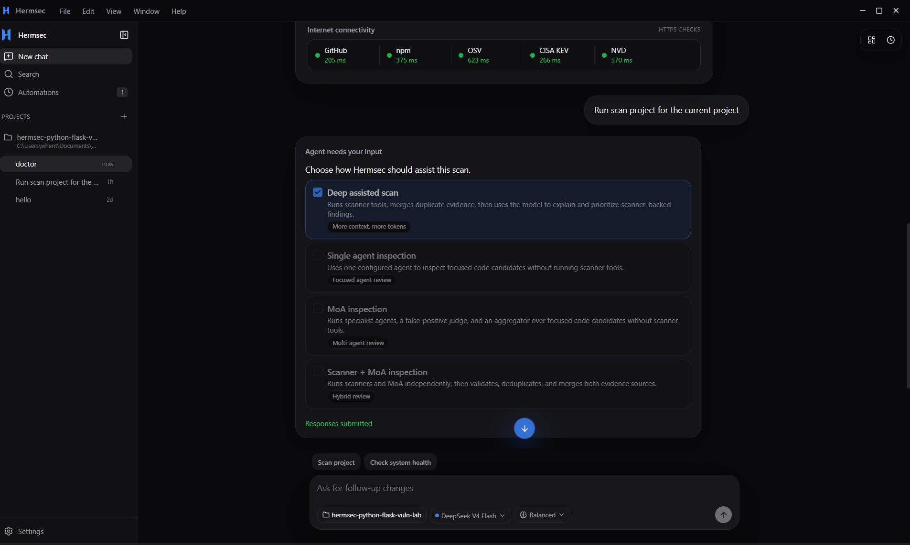
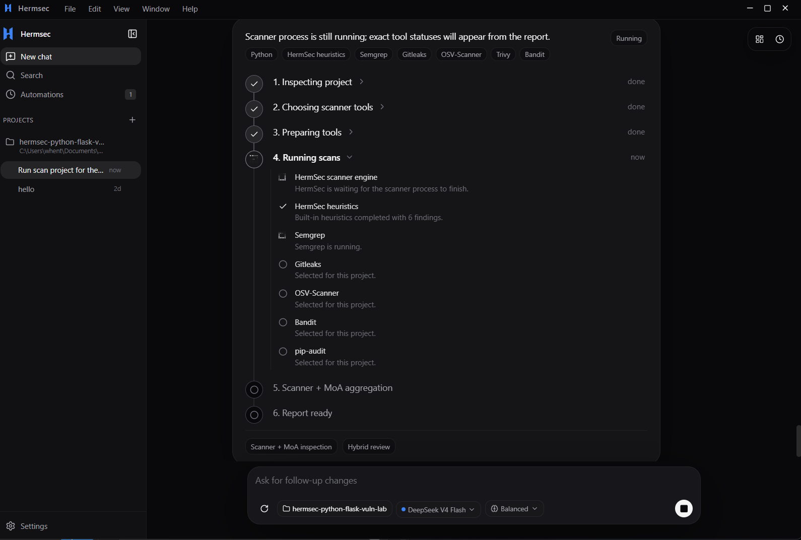
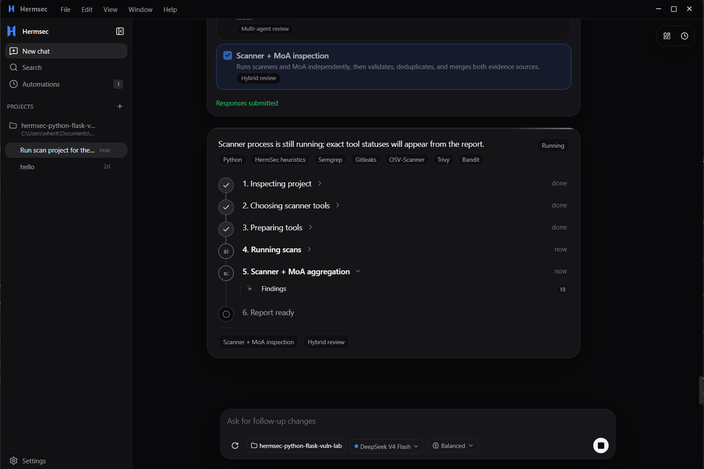
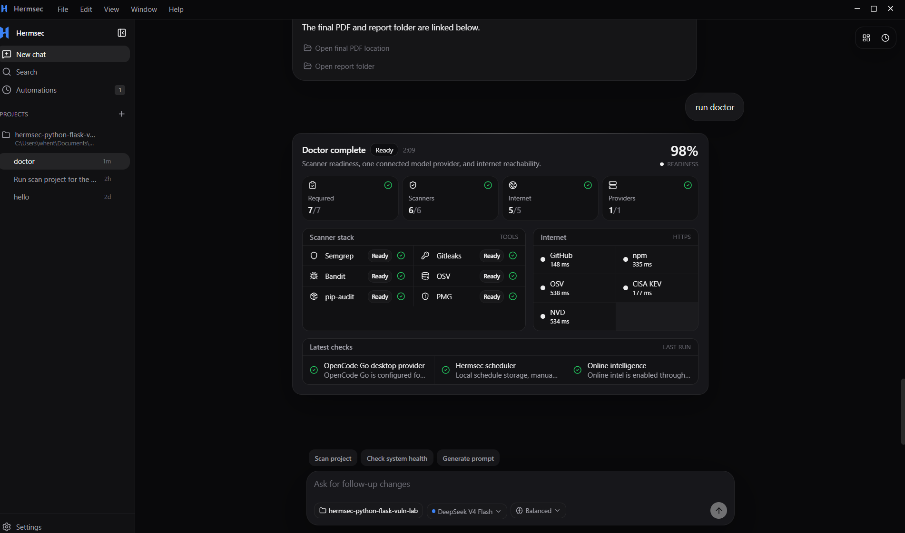
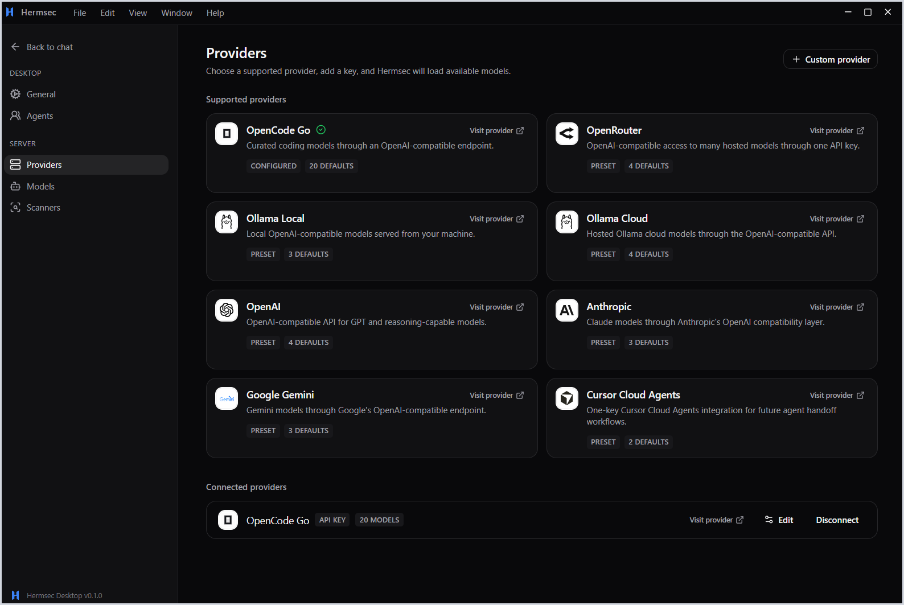

0.7640
The best run found more real issues while still using a judge and final validation to reduce noise.
0.6916precision
0.8533recall
157true positives
A desktop assistant that scans repositories, explains evidence, and creates clean reports for developers.

Many developers do not scan often because setup is slow, reports are noisy, and each language needs different tools.
HermSec turns that work into one simple desktop flow.
The harness inspects the repository, selects the right tools, validates evidence, and writes clean reports.

HermSec checks what the project is, prepares the right tools, runs scanners, normalizes evidence, and then asks the model to explain the confirmed findings.

Each mode uses the same report format, but the evidence is collected and judged differently.
We measured true positives, false positives, false negatives, precision, recall, F1 score, and runtime across the current HermSec modes.
We used lower-cost non-US model routes through OpenCode Go because the goal was useful security review without expensive flagship models.
deepseek-v4-flashmimo-v2.5deepseek-v4-prominimax-m3F1 score was the main balance between precision and recall. The hybrid mode had the strongest final balance.
The best run found more real issues while still using a judge and final validation to reduce noise.

Next we make HermSec smaller, faster, and more automatic.

